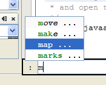
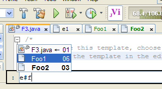
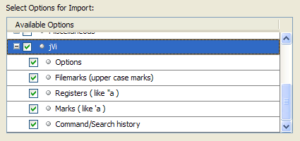

Now you can use vi/vim commands while taking advantage of the NetBeans editors' code completion, templates, fixing compiler errors quickly and access to other IDE features.
Log bugs at jVi Bug Tracking. Please include both the jVi version number and the NetBeans version number, e.g. NB11.2, when reporting problems. Get the version of jVi with the :version command, also the version of jVi in use is displayed on the jVi Options and Configuration editing option property page..
Discuss your issues, problems and/or requests at jVi Open Discussion Forum. This is a good way to indicate what you'd like to see in jVi for NetBeans. Communications can also be sent to jVi.
Start by installing the jVi for NB Update Center Check Tools > Plugins > Available Plugins. If not found there, you can download it from the NetBeans plugin portal, currently found here. After the Update Center is installed, pause while the catalog for jVi is downloaded, you may need to press the reload catalog button; after that there are several more entries in the "Editing" category of the Available plugins tab. Some of the jVi plugins are:
jVi can also be installed by downloading and installing nbvi zip file for NetBeans from sourceforge.
After installed, enable/disable jVi using Main Menu Tools > jVi checkbox. There is also a toggle action to enable/disable jVi. The toggle action can be dragged to the Toolbar and/or bound to a keyboard shortcut. Looking at recent changes to jVi is useful for getting an idea of the features in jVi.
NetBeans has optional per project settings which are used for source code formatting. Since jVi 1.6.1 this is some support for this; in particular, if this support is enabled in both NetBeans and jVi, then shiftwidth, tabstop and expand tabs are taken from NetBeans rather than jVi options. When these NetBeans options are changed, any currently displayed file will not immediately get the new values. Simply switch to another file and then back and the new values are in effect. Other open files properly get the new values. The problem is that jVi is unable to get notification of the value changes.
 In NetBeans, the jVi command line supports some limited completion functionality. It is based on the NetBeans editor code completion infrastructure. The completion list is brought up with <Ctrl-Space> or <Ctrl-D>. There are options, see below, to control whether or not to auto popup the completion lists.
 There is command name completion as shown at the left. When <Return> is entered, the command which is highlighted in the list is copied to the command line and, unless it has ... after it, it is executed immediately. The ... indicates that the command may accept parameters; there is an opportunity to add the parameters and a second <Return> is required to execute the command. At the time of this writing, there is no completion for options, except for :e#.
The :e# command support file name completion as show on the right; again, use <Ctrl-Space> or <Ctrl-D> to bring up the list. The file list is only for files currently open in the NetBeans editor. And of course if no parameter is provided for :e# then the previous file becomes the current file.
| Ctrl-] | Go To Declaration |
| m{.<>} | toggle bookmark, previous bookmark, next bookmark |
| z{oOcCaARMv} | expand fold, collapse fold, toggle open/close, expand all, collapse all |
| gt, gT | Go to the next/previous editor tab page. Wraps around from first to last. |
| :se[t] | See Colon Commands for information on available options. See Netbeans options information for platform interactions of the sw, et, ts, nu options. |
| :e#[<digit>] | After :e# code completion allows the selection of an open file. There is a jVi option ":e#" Auto popup. |
| :g/.../p, :g/.../s/.../p, :1,$s/.../p | The output of these commands go to an Output window with hyperlinks |
| :ls, :buffers, :files | The output of these commands go to an Output window |
| :n[ext], :N[ext], :prev[ious] | Operate on MRU file list, otherwise similar to vim. For example, :3N goes to the third previously file active |
| :q[uit], :wq[!] | Close the curernt tab. Return to the previously active tab; for example Ctrl-], Ctrl-], :q, :q gets you back to where you started. |
| :ts [<any-chars>],
:ta <any-chars> |
These bring up the "Go To Class" dialog. |
| :gr[ep] | perform "Find Usages" action on the identifier under the cursor. |
| :mak[e] <op> <target> |
<op> ::=
[ b[uild] | c[lean] | r[ebuild] | d[oc] | de[bug] | ru[n] ]
<target> ::= [ m[ain] | p[roject] | % ] for main-project current-project current-file. Default <op> is build, default <target> is main. So entering :mak is the same as :make build main. |
| :cn[ext] | Goto the next in the list. In addition to compiler errors, it applies to many lists; for example in the diff window and in the output area, such as Find Usages or "g/pattern/p". |
| :cp[revious], :cN[ext] | Goto the previous in the list. |
| :tabn[ext], :tabp[revious], :tabN[ext] | Go to the next/previous editor tab page. Wraps around from first to last. |
| :tog[gle] [<side>] |
<side> ::=
l[eft]
| r[ight]
| t[op]
| b[ottom]
toggle some NetBeans' window(s) visibility. This operates on windows that minimize to the specified side. The default, no argument, is bottom. |
| :rfr[ename] | Refactor > Rename... |
| :rfm[ove] | Refactor > Move... |
| :rfc[opy] | Refactor > Copy... |
| :rfde[lete], :rfsa[fedelete] | Refactor > Safe Delete... |
| :rfch[angemethodparameters] | Refactor > Change Method Parameters... |
| :rfenc[apsulatefields] | Refactor > Encapsulate Fields... |
| :rfup, :rfpul[lup] | Refactor > Pull Up... |
| :rfdo[wn], :rfpus[hdown] | Refactor > Push Down... |
| :rfintrovar[iable] | Refactor > Introduce Variable... |
| :rfintrocon[stant] | Refactor > Introduce Constant... |
| :rfintrofie[ld] | Refactor > Introduce Field... |
| :rfintromet[hod] | Refactor > Introduce Method... |
There options that control jVi's behavior are found though NetBeans' Main Menu at Tools > Options > jViConfig. Note that there are several sub tabs that contain jVi options as well. Most of these are well known vim options. If you click on an option name, a description of the option is displayed. The option names can generally be used in vim to get help if you want a more detailed description of what the option does.
:set options details. The options shiftwidth, expandtabs and tabstop are per file options, so that any editor clones of a given file have the same value for these options. Different files can have different values for these options. The values set through the UI, in the Buffer Modification tab of the jViConfig options are the default values when a file is opened; setting the values in the UI is like putting them in a .vimrc. Any modeline settings are applied after the UI option values. The number options should be per window, but NetBeans applies it to all windows.
Note that jVi changes the NetBeans values of these options to keep NetBeans in sync with the options for the current file.
Autoindent and other such editor features are handled and configured through NetBeans.
After installing a new release of NetBeans, jVi's option settings can be imported from the previous NetBeans userdir. Start by pressing Import on the Options dialog.
The options export feature saves the options settings to a file. This can be used to move the options to a different machine when they can be imported.
In addition to options, history information can also be imported and exported.
Keybindings that are not caught by jVi are passed on to NetBeans application.
Configure the Keys that are caught by jVi though its Control-Key Bindings and Keypad Bindings options pages. If a key is not checked (disabled) then it can be used for NetBeans keybindings. For example, uncheck Ctrl-I and then this key brings up NetBeans' Override and Implement Methods dialog. And of course there's ^C, ^X and ^V. The Ctrl-J starts some pretty good NetBeans multi-key bindings.